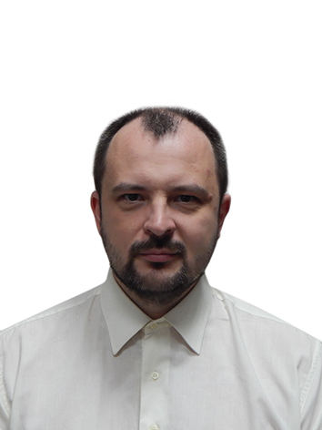

Руслан Воробьев. Разработчик С#

Обо мне
Родился в семье медиков. Даже почерк унаследовал медицинский.
Но вот кто-то умудрился подарить мне на свою голову набор деталей для сборки рабиоприемника. И что-то пошло не так.
Я начал собирать всякие электронные штуки, и в конце добрался до компьютеров. Тогда это были ZX-Spectrum.
Образование
Основная специальность - Автоматизация производственных процессов и производства.
Программирование в моей специальности изначально было побочным видом деятельности, которое со временем стало основным.
В Вузе научился программировать на Pascal, Delphi и промышленных языках стандарта МЭК 61131-3
Дальше осваивать приходилось все в процессе трудовой деятельности по мере необходимости.
Опыт работы
Помотало меня по жизни много где, успел попробовать себя в следующих специализациях:
- сторож
- оператор БСЛ
- телемастер
- наладчик КИПиА
- Программист по 1С
- Разработчик ПО для микроконтроллеров на Assembler, C++
- Инженер АсуТП
- Инженер-программист АсуТП
- Инженер-программист АсуП на Flash
- Desktop разработчик ПО на Delphi
- BackEnd разработчик ПО на C++
- Desktop разработчик ПО на C# с WPF
Есть опасения, что следующей будет web разработка на React + C#.
Хобби
Раньше занимался электроникой. Сейчас как-то прошло.
Люблю бродить по дикой местности, особенно по горам. Но без альпинизма.
Как я становился разработчиком
Писать програмки начал довольно давно, еще в прошлом 🙄 тысячелетии, получается. Что-то на заказ писать примерно тогда же.
- В 1992 году познакомился с компьютерами вообще, это были здоровые ящики с зелеными текстовыми мониторами. Наш трудовик подсуетился с курсами профориентации. Я узнал что такое операционные системы и как с ними работать
- В 1993 году узнал про Бейсик и алгоритмы в компьютерном классе школы.
- В 1994 году закопался в пайку ZX Spectrum и эксперименты на Бейсике основательно. Правда игры как на касете сделать не получилось 🙂
- В 1995 году поступил в институт и начал изучать уже Паскаль. К моему сожалению преподаватели очень ругали Бейсик.
- В 1997 году познакомился с Delpi. В курс оно не входило, но админы институтской сетки поставили ее зачем-то. Начал пробовать писать на нем.
- В 1999 году написал свою первую программу на заказ на Delphi. Правда работал при этом сторожем. Получился сторож-программист 🙂
- В 2000 году защитил исследовательскую дипломную с физико-химической моделью раскисления жидкого металла на Delpi. До сих пор удивляюсь, каким чудом оно работало.
- После института устроился КИПиА, по специальности. Ме повезло попасть в цех с новым американским оборудованием и очень сырам проектом, в том числе и программным. С Этого и началась моя промышленная (во всех смыслах) разработка
Компьютер пользователя, который хочет получить доступ к информации, называют клиентом. Большая часть домашних и офисных компьютеров — клиенты. Клиентом также называют программы, которые используют Интернет (браузеры, почтовые клиенты, читалки).
Компьютер, где расположена информация, называют сервером. Это может быть как обычный домашний компьютер, так и целый комплекс специальных устройств.